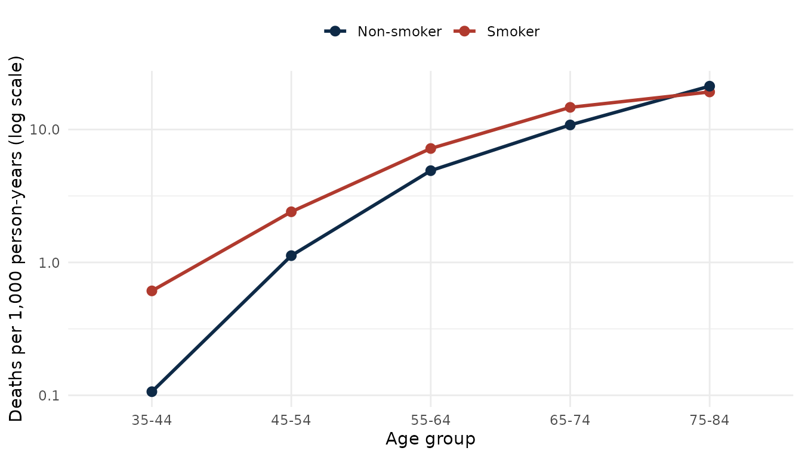
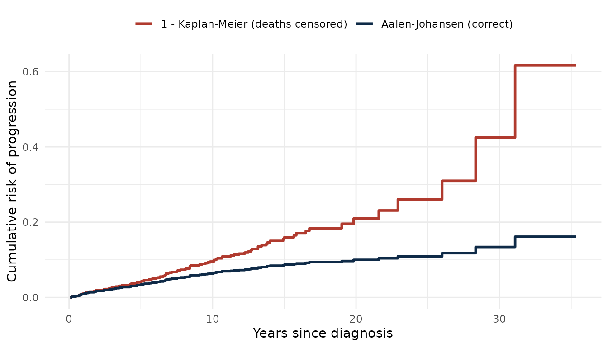
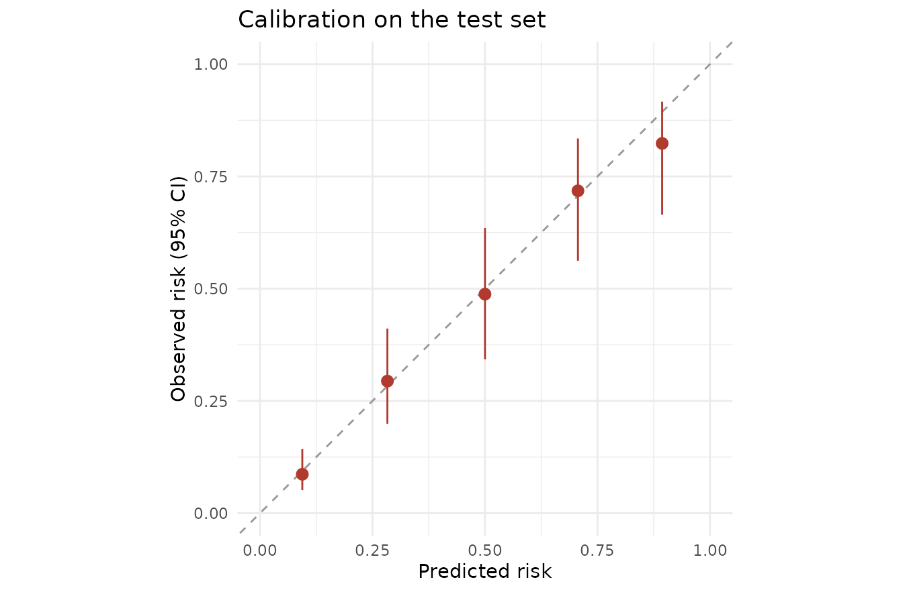
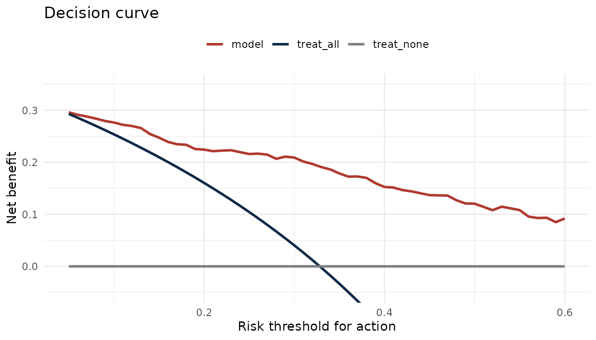

Cohort and clinical epidemiology
Source:vignettes/articles/cohort-and-clinical.Rmd
cohort-and-clinical.Rmd
library(tidyepidemio)
library(ggplot2)
red <- "#B03A2E"
navy <- "#0E2A47"1. Smoking and coronary deaths: rates and confounding
The study. Male British doctors followed for ten
years, with coronary deaths and person-years by age and smoking
(british_doctors; Doll and Hill). The
question: how much higher is coronary mortality among
smokers?
bd <- british_doctors
bd$rate <- 1000 * bd$deaths / bd$person_years
ggplot(bd, aes(age_group, rate, colour = factor(smoker, labels = c("Non-smoker", "Smoker")), group = smoker)) +
geom_line(linewidth = 1) + geom_point(size = 2.5) +
scale_colour_manual(values = c(navy, red), name = NULL) +
scale_y_log10() +
labs(x = "Age group", y = "Deaths per 1,000 person-years (log scale)") +
theme_minimal() + theme(legend.position = "top")
models <- dplyr::bind_rows(
epi_adjusted_rate_ratio(bd, deaths, person_years, smoker),
epi_adjusted_rate_ratio(bd, deaths, person_years, smoker, adjust = age_group),
epi_adjusted_rate_ratio(bd, deaths, person_years, smoker, adjust = age_group, modifier = age_group)
)
knitr::kable(models[c("modifier_level", "estimate", "conf_low", "conf_high", "interaction_p_value")],
digits = 3)| modifier_level | estimate | conf_low | conf_high | interaction_p_value |
|---|---|---|---|---|
| NA | 1.720 | 1.394 | 2.122 | NA |
| NA | 1.426 | 1.155 | 1.759 | NA |
| 35-44 | 5.737 | 1.375 | 23.937 | 0.037 |
| 45-54 | 2.139 | 1.177 | 3.888 | 0.037 |
| 55-64 | 1.468 | 0.989 | 2.179 | 0.037 |
| 65-74 | 1.356 | 0.911 | 2.018 | 0.037 |
| 75-84 | 0.905 | 0.605 | 1.352 | 0.037 |
The crude rate ratio (1.72) overstates the effect because smokers in this cohort were older on average; adjusting for age gives 1.43 (95% CI 1.15 to 1.76). The age-specific ratios show effect modification (interaction p = 0.04): smoking multiplies coronary mortality almost sixfold at 35-44, about twofold at 45-54, and has little relative effect by 75-84, when the baseline risk is high in everyone.
2. Low birth weight: stratification, adjustment and splines
bw <- MASS::birthwt
bw$race <- factor(bw$race, labels = c("white", "black", "other"))
knitr::kable(rbind(
cbind(analysis = "Crude", epi_odds_ratio(bw, smoke, low)[c("estimate", "conf_low", "conf_high")]),
cbind(
analysis = "Mantel-Haenszel by race",
epi_mantel_haenszel(bw, smoke, low, race)[c("estimate", "conf_low", "conf_high")]
),
cbind(analysis = "Logistic, age + weight + race",
epi_adjusted_odds_ratio(bw, smoke, low, adjust = c(age, lwt, race))[c("estimate", "conf_low", "conf_high")]),
cbind(analysis = "Logistic, spline for weight, robust SE",
epi_adjusted_odds_ratio(bw, smoke, low, adjust = c(age, lwt, race), nonlinear = lwt,
robust = "HC1")[c("estimate", "conf_low", "conf_high")])
), digits = 2)| analysis | estimate | conf_low | conf_high |
|---|---|---|---|
| Crude | 2.02 | 1.08 | 3.78 |
| Mantel-Haenszel by race | 3.09 | 1.49 | 6.39 |
| Logistic, age + weight + race | 2.87 | 1.36 | 6.04 |
| Logistic, spline for weight, robust SE | 2.77 | 1.29 | 5.96 |
Race confounds the crude association. The crude odds ratio is about 2; once race is accounted for, by stratification or regression, smoking is associated with roughly three times the odds of low birth weight, and the estimate barely moves with a spline for maternal weight or robust errors.
3. Competing risks: progression of MGUS
The study. 1,384 patients with monoclonal gammopathy
of undetermined significance at the Mayo Clinic
(survival::mgus2). Patients can progress to a plasma-cell
malignancy or die first.
m <- survival::mgus2
m$years <- ifelse(m$pstat == 0, m$futime, m$ptime) / 12
m$event <- ifelse(m$pstat == 0, 2 * m$death, 1)
m$ev_any <- as.integer(m$event == 1)
aj <- epi_cumulative_incidence(m, years, event, cause = 1)
km <- epi_kaplan_meier(m, years, ev_any)
compare <- rbind(
data.frame(years = aj$time, risk = aj$cumulative_incidence, method = "Aalen-Johansen (correct)"),
data.frame(years = km$time, risk = 1 - km$estimate, method = "1 - Kaplan-Meier (deaths censored)")
)
ggplot(compare, aes(years, risk, colour = method)) +
geom_step(linewidth = 1) +
scale_colour_manual(values = c(red, navy), name = NULL) +
labs(x = "Years since diagnosis", y = "Cumulative risk of progression") +
theme_minimal() + theme(legend.position = "top")
Censoring deaths overstates the risk of progression, because patients who die can no longer progress: at 20 years the naive estimate is about 21%, twice the correct cumulative incidence of about 10%. The cumulative incidence function answers the question patients actually ask.
4. Validating a diabetes risk model
Fit a logistic model on the Pima training data and evaluate it on the
independent test set (MASS::Pima.tr,
MASS::Pima.te).
train <- MASS::Pima.tr
test <- MASS::Pima.te
train$dm <- as.integer(train$type == "Yes")
test$dm <- as.integer(test$type == "Yes")
fit <- glm(dm ~ glu + bmi + age + ped, binomial, train)
test$risk <- predict(fit, test, type = "response")
epi_calibration_summary(test, dm, risk)
#> # A tibble: 1 × 7
#> n event_prevalence brier calibration_in_large calibration_intercept
#> <int> <dbl> <dbl> <dbl> <dbl>
#> 1 332 0.328 0.142 -0.0599 -0.0855
#> # ℹ 2 more variables: calibration_slope <dbl>, roc_auc <dbl>
cal <- epi_calibration(test, dm, risk, bins = 5)
ggplot(cal, aes(mean_predicted, observed_risk)) +
geom_abline(linetype = 2, colour = "grey60") +
geom_pointrange(aes(ymin = conf_low, ymax = conf_high), colour = red) +
coord_equal(xlim = c(0, 1), ylim = c(0, 1)) +
labs(x = "Predicted risk", y = "Observed risk (95% CI)", title = "Calibration on the test set") +
theme_minimal()
dc <- epi_decision_curve(test, dm, risk, thresholds = seq(0.05, 0.6, 0.01))
ggplot(dc, aes(threshold, net_benefit, colour = strategy)) +
geom_line(linewidth = 1) +
coord_cartesian(ylim = c(-0.05, 0.35)) +
scale_colour_manual(values = c(model = red, treat_all = navy, treat_none = "grey50"), name = NULL) +
labs(x = "Risk threshold for action", y = "Net benefit", title = "Decision curve") +
theme_minimal() + theme(legend.position = "top")
The model is well calibrated (calibration slope 0.95, AUC 0.86) and offers more net benefit than treating everyone or no one at every threshold shown.